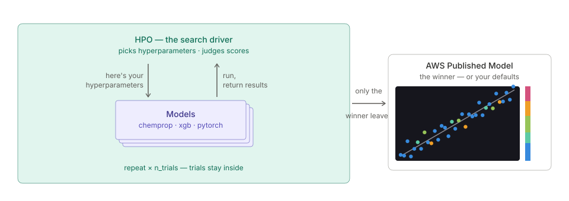
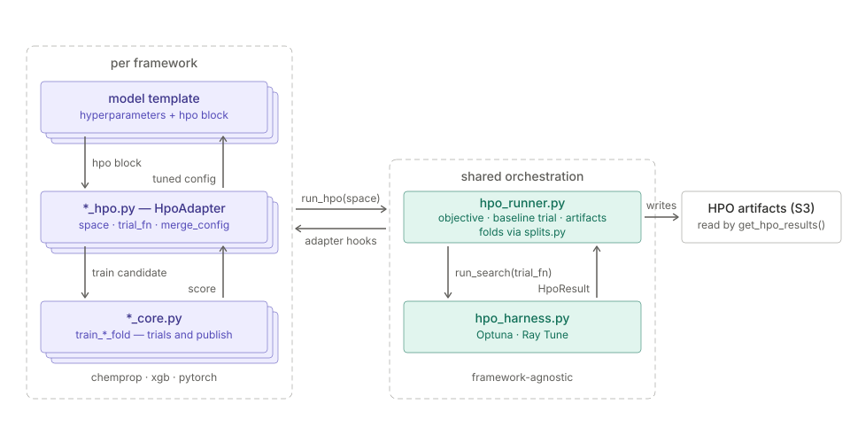

Hyperparameter Optimization (HPO)

HPO wraps normal model creation. The search driver hands a set of hyperparameters to the same training code that publishes your models, gets a score back, and repeats — all inside a single training job. Trials are ephemeral: they never create Workbench models or endpoints, so a searched model looks like any other model.
Available for ChemProp, XGBoost, and PyTorch, regression only.
Running a search
An otherwise normal to_model() call plus an hpo block:
from workbench.api import FeatureSet, ModelType, ModelFramework
fs = FeatureSet("aqsol_features")
model = fs.to_model(
name="sol-xgb-hpo",
model_type=ModelType.UQ_REGRESSOR,
model_framework=ModelFramework.XGBOOST,
target_column="solubility",
feature_list=fs.feature_columns,
description="Solubility regression (hyperparameter-searched)",
tags=["solubility", "hpo"],
hyperparameters={"uq_version": "v1", "hpo": {"n_trials": 250}},
)
The winning configuration becomes the model's hyperparameters, so the published model is deployed and used exactly like any other.
The hpo block
| key | default | what it does |
|---|---|---|
n_trials |
per framework | search budget — 60 (ChemProp), 100 (PyTorch), 250 (XGBoost), sized to what one trial costs |
search_space |
all groups | which knob groups to search — see below |
backend |
auto |
optuna (serial) or ray (parallel, needs a GPU box) |
gpus_per_trial |
0.5, or 1.0 multi-task |
GPU share one trial claims (Ray only) |
max_parallel |
GPUs ÷ gpus_per_trial |
concurrent trials (Ray only) — derived from the box, set it only to override |
Those five keys are the whole block. Anything else raises at submit time rather than
running a different search than you asked for — a typo (n_trails) as an unknown key, and
metric, rerank_top_k and n_folds as retired ones, each naming what replaced it. The
objective is always pooled out-of-fold MAE, trials always use the model's own n_folds, and
your own hyperparameters ride along as a trial instead of being re-ranked against the winner.
The searched knobs differ per framework, and a model knows its own — hpo_search_space()
dispatches on the model's framework and returns one row per knob, carrying its range and
where it sits untuned. A space is judgeable without running anything:
Three columns are pinned — knob, default, dist — and everything specific to the
distribution rides in a spec JSON object, so knobs of different kinds share one table
without leaving holes:
| knob | default | dist | spec |
|---|---|---|---|
max_depth |
7 | int | {"low": 3, "high": 16, "step": 1} |
learning_rate |
0.05 | float | {"low": 0.003, "high": 0.3, "log": true} |
ffn_hidden_dim |
"300-300" | choice | {"options": ["300", "600", "1200", "1800", "300-300", ...]} |
json.loads the spec cell to read it. This is always the framework's full space.
To search only part of it, set hpo["search_space"] to a group name or a +-joined
combination. Every framework splits its space in two, along the lever that matters for it:
| framework | groups |
|---|---|
| ChemProp | basic (depth, hidden and FFN widths) + optimizer (max_lr, batch size) |
| PyTorch | basic (layer shape, dropout) + optimizer (learning rate, weight decay, batch size) |
| XGBoost | basic (tree capacity and learning rate) + reg (sampling and penalty terms) |
So hpo={"search_space": "basic"} on ChemProp or PyTorch spends the whole budget on
architecture — useful when you already trust your optimizer settings. Read the XGBoost row
before doing the same there: boosting rate lives in basic, so that call searches the
learning rate and drops the regularization terms instead.
Your own ranges and defaults
A default is just a hyperparameter. Set a knob normally alongside the hpo block and it
becomes the baseline the search has to beat — and the value used for any knob outside the
searched groups:
A range needs a SearchSpace. Start from the shipped space, change the knobs you have an
opinion about, and hand the result to hpo["search_space"]:
from workbench.training.hpo_harness import SearchSpace, IntRange, FloatRange
space = SearchSpace("xgboost") # or "chemprop" / "pytorch"
space["max_depth"] = IntRange(4, 8, default=6) # your ceiling, not ours
space["learning_rate"] = FloatRange(0.02, 0.06, log=True)
del space["gamma"] # not worth trials on this data
fs.to_model(..., hyperparameters={"uq_version": "v1",
"hpo": {"n_trials": 250, "search_space": space.to_dict()}})
SearchSpace is a dict subclass, so ordinary space[knob] = ... and del are the whole
editing API. .subset("basic") narrows to a group, and .to_frame() gives the same table
hpo_search_space() returns, for checking your work.
What you pass is the whole space — a one-knob dict searches one knob, it does not patch
ours. That is what makes space.to_dict() the natural starting point.
to_dict() emits plain JSON, which is also what hpo["search_space"] accepts directly if
you would rather write it out:
hpo={"search_space": {"max_depth": {"dist": "int", "low": 4, "high": 8, "default": 6},
"learning_rate": {"dist": "float", "low": 0.02, "high": 0.06, "log": True}}}
dist is required — "int", "float", or "choice" — and default is optional, falling
back to the framework's. Bad spaces fail immediately rather than on trial 40: an inverted
range, a log scale starting at zero, or an empty option list all raise at construction.
Chemprop adds one rule, checked when the search starts. The FFN head is one knob:
ffn_hidden_dim holds per-layer shapes ("512-128" is a 512→128 head), so its length is the
layer count. Searching ffn_num_layers beside shape-valued widths is rejected — the sampled
layer count would be recorded in the trials and the published config without ever being
built. Chemprop's own two-knob spelling stays available for a custom space: give
ffn_hidden_dim int widths only, and ffn_num_layers is live in every trial.
Every trial trains the real ensemble
A trial trains the same n_folds ensemble the winner is published as, scored as pooled
out-of-fold MAE on the training rows. Scoring a configuration in the regime it ships in is
the point — one picked as a single model does not carry over to an ensemble.
Your own hyperparameters run as one of the trials. They go first, so the sampler starts
from an anchored observation instead of a cold space, and they can win — in which case your
settings are what gets published. That row is marked kind="baseline" in the trials frame,
and it is the reference line every plot of the search centers on.
Trials stop early
Ensemble members train one at a time, and the running out-of-fold pool is reported after each one — so a configuration already off the pace is stopped rather than paying for the rest of its ensemble. Rungs sit at members 1, 2 and 4, and each keeps the better half of the trials that reached it.
Two properties make that safe. The last rung is the whole objective rather than a proxy for it, so stopping early can cost you a good configuration but can never publish a bad one. And fold order is fixed, so every trial at a given rung was scored on the same molecules — the comparison is paired.
The saving is what pays for the budget: a 60-trial ChemProp search costs roughly 175
member-trainings instead of 300. Stopped trials show up as pruned in trial_counts and
completed=False in the trials frame, keeping the partial value they reached — which is how
you tell "stopped early" from "died". Only trials that ran every member are ranked, since a
partial pool is measured over fewer molecules and is not the same number.
What the numbers mean
A search's own values are diagnostics, not performance estimates, for two reasons that no amount of internal re-measurement can fix:
- The winner is the minimum over many noisy evaluations, so it is the luckiest draw of many and overstates what the configuration is worth. That bias grows with the trial count — a bigger search reports a better-looking margin for the same model.
- Every candidate was scored on the folds that selected it.
So read the margin as "the search ranked this configuration best by X%", never "the model is X% better". The real number comes from a measurement the search did not select on: the published model's own cross-fold metrics, a held-out set the search never saw, or a champion/challenger comparison.
Reading the results
One call resolves the training job's artifacts — no hunting for S3 paths or CloudWatch
logs. A None return doubles as the "was this model searched?" check.
{'metric': 'cv_mae',
'trial_counts': {'attempted': 100, 'completed': 24, 'pruned': 76, 'failed': 0},
'best_config': {'layers': '128-64',
'dropout': 0.25,
'learning_rate': 0.0002846282635669909,
'weight_decay': 0.0014020994043985207,
'batch_size': 128},
'search_best_value': 0.5106314063072205,
'search_baseline_value': 0.5450914978981019,
...}
best_config is what shipped. These are the model's hyperparameters now — you can hand
the dict straight to another to_model() call to train a sibling on different data:
fs.to_model(name="pxr-reg-pytorch-v2", ..., hyperparameters={"uq_version": "v1", **results["best_config"]})
search_best_value vs search_baseline_value are both metric (here cv_mae, lower
is better) on the same folds — the winner against your own untuned settings:
gain = 100 * (results["search_baseline_value"] - results["search_best_value"]) / results["search_baseline_value"]
print(f"{results['metric']}: {results['search_best_value']:.4f} vs {results['search_baseline_value']:.4f} baseline ({gain:+.1f}%)")
# cv_mae: 0.5106 vs 0.5451 baseline (+6.3%)
The search_ prefixes are a warning label, not decoration — see
What the numbers mean. This margin is how the search ranked
things, not how much better the model is.
trial_counts tells you whether the budget was spent well. pruned is expected and
healthy — that is the ladder working. failed is not: any at all is worth a look at the
training log (CUDA OOM is the usual cause when trials share a GPU), because a failed trial
produced no objective and so never backed the result.
The trials frame
| number | value | step | completed | kind | hyperparameters | trajectory |
|---|---|---|---|---|---|---|
| 0 | 0.545091 | 5 | True | baseline | {"layers": "128-64", ...} |
{"1": 0.52, ..., "5": 0.545091} |
| 1 | 0.516991 | 5 | True | trial | {"layers": "256-128", ...} |
{"1": 0.49, ..., "5": 0.516991} |
| 2 | 0.611210 | 2 | False | trial | {"layers": "512-256-64", ...} |
{"1": 0.60, "2": 0.611210} |
hyperparameters is a JSON object of every searched knob and the value it actually trained
at, so each row is complete and NaN-free — expand it with json.loads to get one column per
knob:
import json
import pandas as pd
df = pd.DataFrame([json.loads(h) for h in trials["hyperparameters"]])
df["value"] = trials["value"].values
df = df[trials["completed"].values] # a stopped trial's value is not comparable
df.nsmallest(5, "value") # the best configurations the search found
df.groupby("layers")["value"].agg(["count", "mean", "min"])
step is the ensemble member a trial last reported at, so it says where a stopped trial
stopped. completed=True means it ran every member and was eligible to win; completed=False
with a value is a trial the ladder stopped, and completed=False with no value is one
that died. Only compare value across completed trials — a stopped trial's pool covers
fewer molecules.
trajectory is that same objective at every member the trial reached, {member: value}. The
caveat above applies within a row too: entry k is the pooled MAE over the first k members,
and how hard those molecules are varies by dataset.
The single kind="baseline" row is your own untuned config, scored as an ordinary trial on
the same folds. The ladder ignores it in both directions — it is never stopped at a rung, and
its full-fidelity value is never counted in one either — so whenever it scores at all, it
scores at full fidelity. It can still fail outright like any trial, in which case
there is no reference line and plots fall back to the trials' median.
Which knobs mattered
hpo_importance() answers that from the search's own trials — useful for deciding where to
spend the next budget, or whether a knob earns its place in the space at all:
| knob | importance | effect | best |
|---|---|---|---|
learning_rate |
0.74 | 2.54% | 0.00017 |
layers |
0.23 | 0.59% | 1024-512-256 |
dropout |
0.01 | 0.09% | 0.25 |
batch_size |
0.01 | 0.07% | 512 |
weight_decay |
0.01 | 0.04% | 0.000005 |
Read the two numbers together. importance is a share and always sums to 1, so in a
search where nothing mattered something still looks important. effect is the absolute
read — how far the objective moves across that knob's range, as a percentage of the
objective. A knob is worth tuning only when both are high; the bottom three above hold a
real share of very little. best is where the objective bottoms out with the other knobs
averaged out, which is meaningless when effect is small.
Only completed trials feed the fit. A stopped trial scored a partial ensemble — a
different objective, not a noisier one. That filter has a cost: the survivors all cleared the
same rungs, so the objective range the surrogate sees is narrower than the search explored,
and the harder the ladder pruned the more effect understates. A search whose knobs all look
modest may just be one that pruned hard.
When the top knob's share cannot be separated from a random column planted in the same fit, the call logs a warning rather than returning a confident-looking ranking.
How it's computed. The trials are the dataset — knob values in, objective out — and a
random forest is fit to that response surface. importance is the forest's split-based
importance; effect and best come from a partial-dependence sweep, which pins one knob
across its range while averaging over the others.
That averaging is the point. A search is not a designed experiment: the sampler concentrates trials where it thinks the optimum is, so a knob's raw group means are confounded with whatever else it happened to be exploring at the time. Marginalizing the other knobs out is what makes one knob's effect readable on its own. A forest suits the job because the response is small-N, riddled with interactions, and often non-monotone — a learning rate with an interior optimum has a rank correlation near zero, which would read as "irrelevant" to a simpler measure. It is also the field standard: fANOVA, what Optuna reports, is random-forest-based too.
Two limits worth knowing. Split-based importance is biased toward knobs with more distinct
values, which is part of why effect is there as a differently-biased second opinion. And
partial dependence extrapolates — where the sampler correlated two knobs, the sweep asks
the forest about combinations the search never actually tried. These are observational
estimates over a few dozen trials, not a controlled ablation, so treat the ordering as
directional.
How it fits together

Everything on the left is per-framework — one model template, one adapter, and one fold trainer for each of ChemProp, XGBoost, and PyTorch. Everything on the right is shared and knows nothing about any framework.
A template hands its hpo block to its adapter, which calls run_hpo. From there control
inverts: the runner drives the search and calls back into the adapter for the
framework-specific parts — the search space, how to train and score one candidate, and how a
winning config merges back into the hyperparameters. That boundary is why all three
frameworks produce identical artifacts and hpo_results() needs no per-framework logic.
The detail that makes a search result mean anything is at the bottom left: a trial and the
final published model train through the same train_*_fold function. A configuration is
therefore scored in exactly the regime it ships in.
What to expect
Temper expectations. Framework defaults are a strong baseline and often win on small datasets, and the literature finds ChemProp HPO is roughly a coin flip against defaults there. Measured on our own data, HPO improved in-distribution cross-validation but lost to stock defaults on a held-out analog series — gains on cross-validation do not imply gains on a new chemical series.
The objective is cv_mae, scored out-of-fold on the training rows. Rows designated through
validation_ids are held out of training and out of the search, so they stay an honest
benchmark — and they are the right place to check whether a search actually bought you
anything.
Questions?

The SuperCowPowers team is happy to answer any questions you may have about AWS® and Workbench.
- Support: workbench@supercowpowers.com
- Discord: Join us on Discord
- Website: supercowpowers.com